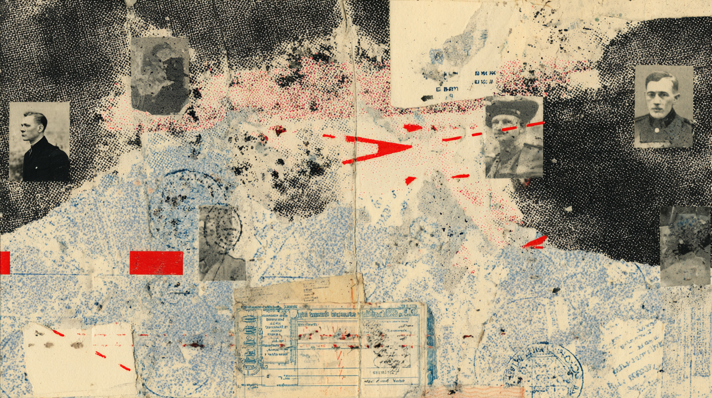
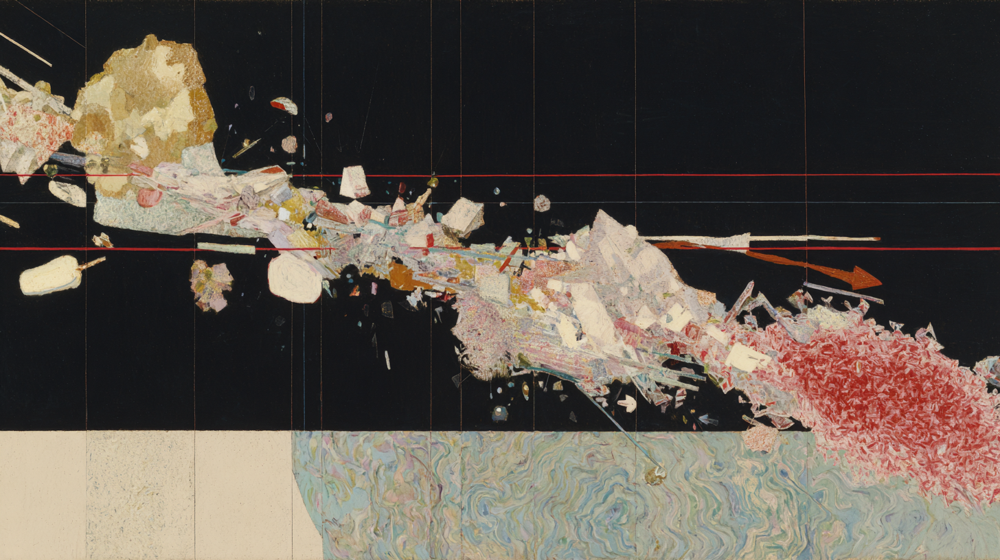
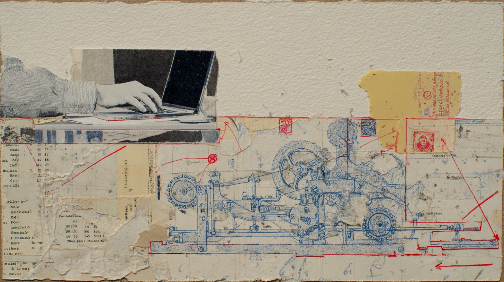

I tracked my screen for sixteen days in late 2025, a standard productivity audit, the kind you do when you suspect your days are leaking somewhere but can't name the drain. The audit found it. I hadn't written a single paragraph without consulting an AI in over three months.
The model wasn't required. I write for a living and I've written research reports that closed six-figure deals. I once wrote a 40-minute musical set and performed it on Kyryllivs'ka. The capacity was there, fully intact, but somewhere between spring and autumn I'd stopped trusting that I could produce adequate prose without the machine. The skill hadn't atrophied. My confidence in it had.
Ivan Illich had a word for this. In Medical Nemesis (1975), he called it iatrogenesisFrom Greek: iatros (healer) + genesis (origin). Illness caused by the healing system itself., when the healthcare system itself becomes the source of illness. He didn't mean malpractice. He meant the institution destroying the very capacity it claims to support. Patients who can no longer heal without hospitals, students who can no longer learn without schools. I was looking at the cognitive version, self-inflicted and entirely voluntary.
minsk → kyiv → lisbon
Some context on why this hit differently for me.
I've been displaced twice, Minsk to Kyiv in 2020, then Kyiv to Lisbon after February 2022. Each crossing stripped away another layer of institutional identity: degrees that don't transfer, professional networks that evaporate at the border. My EMBA from IPM, my IKRA creative school certificate, they got me meetings in Minsk but were decorative paper in Kyiv, and the Kyiv network I rebuilt over two years became a contact list of people scattered across a dozen countries.
What survives that kind of displacement is a raw decision-making capacity. You learn to operate without the scaffolding, no alma mater network, no career ladder anyone recognizes. Just your judgment and whatever fits in your head when you cross a border on short notice. This is the thing about immigrants that people who've stayed put don't always see: we've already been stripped to the шасси, the chassis. We know exactly what's ours and what was borrowed from the environment. Or at least we think we do.
The screen diary showed me that this capacity, the one thing displacement couldn't take, was being quietly mediated by a tool I'd invited in myself. No state imposed it. No employer required it. I chose it freely, daily, until the choosing became invisible. I'd been through two borders and each one taught me the same lesson: institutions will fail you, so build your own capacity. Then I handed that capacity to an API endpoint, one convenient autocomplete at a time.

illich's test
In Tools for Conviviality (1973), Illich proposed something like a test, though he'd probably hate me calling it that. He wasn't handing out evaluation frameworks. He was questioning the assumptions that make you think you need one in the first place. But I'm a consultant by training, so I read him and immediately started distilling criteria. Old habits.
Here's what I got out of it: a tool is convivial if anyone can use it without special certification, if it serves the user's purpose rather than the creator's, if one person's use doesn't degrade it for another, and if it creates no obligation to keep using it.
When I first read these I thought they were obvious. Then I tried to name a single digital tool in my daily stack that passes all four and couldn't do it.
the new radical monopoly
Take ChatGPT or Claude. The first three criteria arguably pass: anyone with internet access can use them, they broadly serve user purposes, and one person's query doesn't diminish another's.
The fourth criterion has a name. Illich called it radical monopolyWhen one type of product reshapes reality so alternatives become impractical. Not brand dominance, but category dominance., and it's where the whole thing collapses, quietly, without anyone voting on it. Job listings now require "AI proficiency." Universities permit AI-assisted essays, which sounds progressive until you realize unassisted essays now look suspiciously underperforming. Publishers assume AI editing as baseline. Clients ask why your research report doesn't have the polish of an AI-generated document. The environment reshapes around the tool until opting out becomes a competitive handicap.
Cars didn't just outcompete buses. They rebuilt entire cities, highways, suburbs, parking lots, until walking stopped being a viable way to get around. The car didn't win a fair race against the bus. It redesigned the entire city until walking wasn't an option.
I recognized the pattern from border crossings. At each one, I learned how deeply my capacity depended on institutional infrastructure I couldn't see until it vanished. Radical monopoly works the same way: you don't notice the dependency until you try to opt out and discover the world has been quietly restructured around the assumption that you won't. AI does the same thing to cognition, reshaping the environment until unaugmented thinking looks like walking on the freeway. It doesn't have to be better than human thought. It just has to make the alternative feel impractical.
Žižek once made a point about cynical distance that I keep coming back to here. We're both from Eastern Europe so the examples with authoritarian politicians land faster. Under authoritarian regimes, the subject can at least maintain inner resistance: "I know this is oppression, I know this isn't freedom." Under voluntary tool adoption, you think you're free, so you don't even have that internal friction. The voluntariness of AI tools is exactly this. You chose it, so you can't name the capture. Illich's version is quieter but identical in structure: you don't recognize the labor as labor because you chose it.
Running your own model on your own hardware gets closer to convivial, no subscription, no data leaving your machine. But a decent local setup requires a thousand-dollar GPU and command-line literacy that maybe five percent of the population has, and the convivial tool that demands expertise recreates the professional monopoly Illich found in medicine: healing confiscated by doctors, patients needing permission to understand their own bodies. Self-hosting is convivial for the technically literate. For everyone else, it's a monastery with a very specific entrance exam.
Crypto has the same structure but compressed into a tighter parable. Self-custodial wallets promise your keys, your money, no bank, no intermediary. Beautiful architecture. Then you hit seed phrases, bridge protocols, signature requests you can't read, and the complexity creates its own priesthood: a new mediating class between you and the tool that was supposed to eliminate mediating classes. The tool that was supposed to eliminate intermediaries creates a new class of intermediaries. I should know. I spent years in that world, and when I left it, I voluntarily built the next version of the same trap. Promen, self.md, Stacy, proof of sovereignty, each one a tool I designed to free myself, each one a system I now serve.
the crossing moment
I can trace the specific inversion in my own workflow. I wasn't watching for it at the time, but I went looking after the screen diary made it impossible to ignore.
Late 2025: open Claude → describe what I want to think about → generate draft → edit output
March 2026: tell Promen what to think about → Promen spawns critics, editors, sub-agents → approve
Same tools, same person, but the first workflow has me using a tool. By the third, I'm just approving its output. My credit lines shifted from "designed by Ray, drafted with Claude" to "drafted by Promen, approved by Ray."

This essay was produced the same way, right now, March 2026. An essay about AI dependency, produced through an AI pipeline. Told Promen what I wanted to say. Promen spawned eight critics, ran three rounds of review, rewrote the second half twice. I approved. Why wouldn't I use it? Each choice was rational. Over three months, the rational choices added up to me not writing anymore.
shadow work
I don't even write prompts anymore. I build SkillsReusable instruction sets for AI agents. Define voice, behavior, workflow, review rounds. Think: job description for a machine., reusable instruction sets that tell my AI agents how to behave, what voice to use, which critics to spawn, how many rounds to run. Think of it as management by policy: instead of telling the AI what to do each time, you write the standing orders once and let it run. I build them for myself and for others. I named my agents. PromenMy personal AI assistant running on OpenClaw. Has access to all my documents, memory, preferences, and Skills. Named after "промень" (ray of light)., my personal AI running on OpenClaw with all my data and Skills, writes my essays. Stacy handles research. I'm not prompting a model. I'm architecting a workforce.
Last week I spent ninety minutes building a Skill, a reusable board-of-critics pipeline that spawns five experts, runs three rounds of review, and synthesizes their output into a single document. I could have just thought it through myself in two hours. I felt productive the entire time, and then I looked at what I'd actually done: I'd designed someone else's job and called it creative practice.

Illich had a name for this kind of labor. In Shadow Work (1981), he described the invisible complement to wage labor: the unpaid work the industrial system requires to function. The housework that enables the wage earner. The commute that delivers you to the office. The self-checkout that hands you the cashier's job for free.
Skill architecture extends what Illich called shadow work into voluntary territory. The hours designing agent behaviors, structuring workflows, testing critic pipelines, tuning voice parameters, all of it trains future models, generates value for the platform, and keeps the ecosystem growing. Unlike the self-checkout, which at least feels like work, building Skills feels like craft, like management, like something you'd put on a LinkedIn profile. Nobody forces you to do it, and Illich's shadow work was compulsory, the commute you couldn't refuse. But that voluntariness makes it more extractive, not less. You don't recognize the labor as labor because you chose it.
what the tool took last
I keep thinking the story here is about writing, about cognition, about the slow erosion of a skill I used to trust. That's the version that's safe to publish. The screen diary, the blank page, the system prompt that ate ninety minutes. It's uncomfortable, but it's contained. It's about work.
The thing I haven't said yet isn't about work.
A few weeks ago, my wife was going through something difficult. The specifics are hers, not mine.
I didn't sit down with her. I didn't ask how she was feeling. I didn't do the thing that a person who loves another person does, which is to be present in the room with them and listen.
I opened a chat with my AI assistant. And I started typing out her situation. Describing it. Analyzing it. Breaking it into components. Looking for patterns. Asking the model what I should do.
She was in the same room.
Illich wrote about the Samaritan, a man who sees someone suffering and stops. No institution between them. One person in the room with another. His fear was that we'd systematize that response until the impulse to stop disappears. I didn't stop. I opened a chat window.
I don't know how to end this cleanly. I don't think I should.
designed by ray, drafted by promen